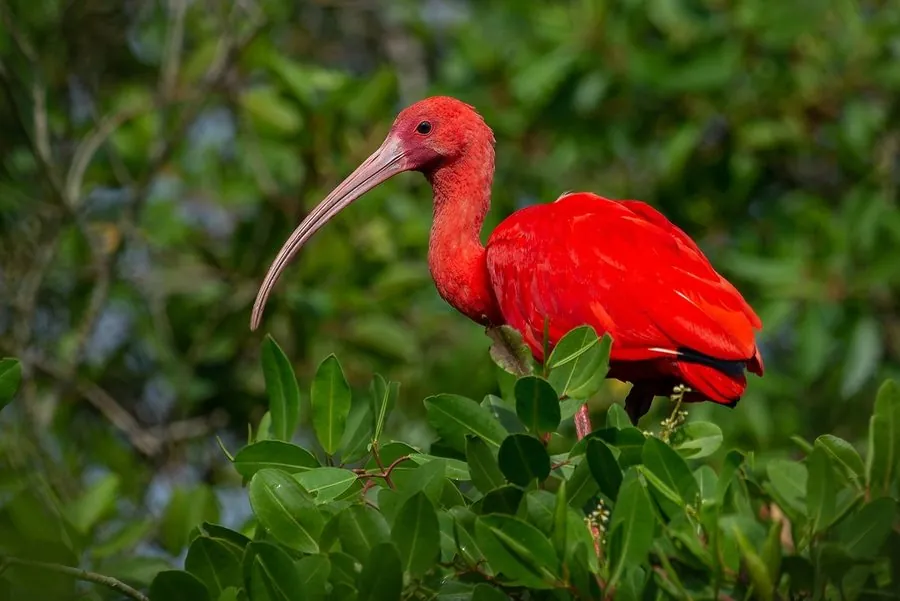

鸟类 · 动物界
美洲红鹮 Eudocimus ruber

全身鲜红色的南美鹮类，长喙下弯、腿红色，成群在红树林和滩涂觅食，羽色来自食物中的类胡萝卜素。
- 分类
- 门脊索动物门纲鸟纲目鹈形目科鹮科属美洲鹮属
- 栖息环境
- 红树林、河口、滩涂、沼泽与浅水湿地
- 地理分布
- 南美洲北部和中美洲沿海，中国无分布
- 保护级别
- IUCN 无危（LC）；非中国分布物种
物种志
美洲红鹮体长 56–61 cm，体重 600–800 g。它的全身羽毛呈鲜艳的猩红色，喙细长而向下弯曲，呈红色或黑色，腿红色，飞行时颈部前伸、双腿后展，姿态优美。幼鸟羽色呈灰褐色，随着成长和取食逐渐变红。
美洲红鹮分布于南美洲北部和中美洲沿海，从哥伦比亚、委内瑞拉到巴西沿海都有，栖息在红树林、河口、滩涂和沼泽。它们以虾、蟹和小型水生动物为食，鲜红的羽色来自食物中富含的类胡萝卜素，人工饲养时若食物中缺少这类色素，羽色会变淡。繁殖期在树上集群营巢，每窝产卵 2–4 枚，孵化 19–23 天。美洲红鹮是特立尼达和多巴哥的国鸟，目前被列为无危物种。
形态与习性
- 食性虾、蟹和小型水生动物
- 体长56–61 cm
- 体重600–800 g
- 繁殖每窝 2–4 枚卵，孵化 19–23 天
- 羽色鲜红色来自食物中的类胡萝卜素
- 文化地位特立尼达和多巴哥的国鸟
趣味知识
- 美洲红鹮的鲜红羽色来自食物中的类胡萝卜素，吃得不足颜色会变淡。
- 它们常成群在红树林和滩涂上觅食虾蟹，是南美洲沿海的常见景观。
- 美洲红鹮是特立尼达和多巴哥的国鸟。